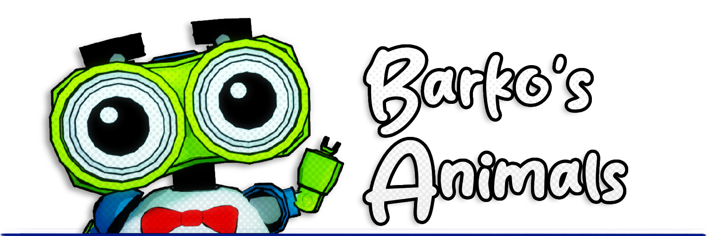
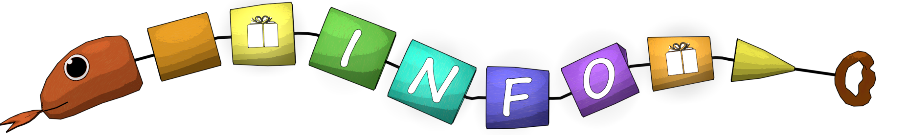
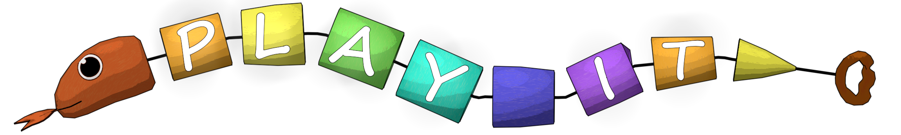
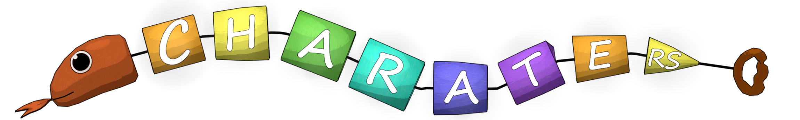
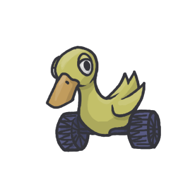
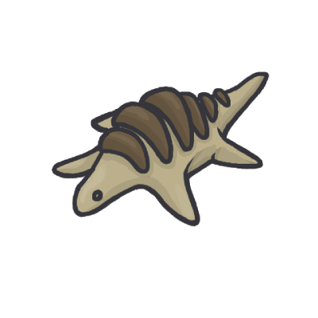
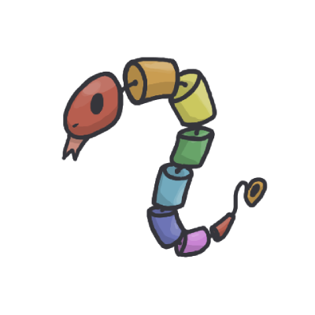
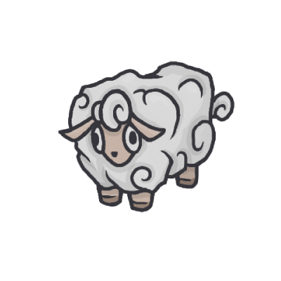

✖


A joyful world of toys, adventures, and endless imagination

Barkitos Animals is a cheerful adventure where you join Barkito, a cute toy robot, in his mission to help animals living on a magical toy island.
Explore floating islands, rescue lost toy animals, and uncover the secrets of a playful archipelago.





